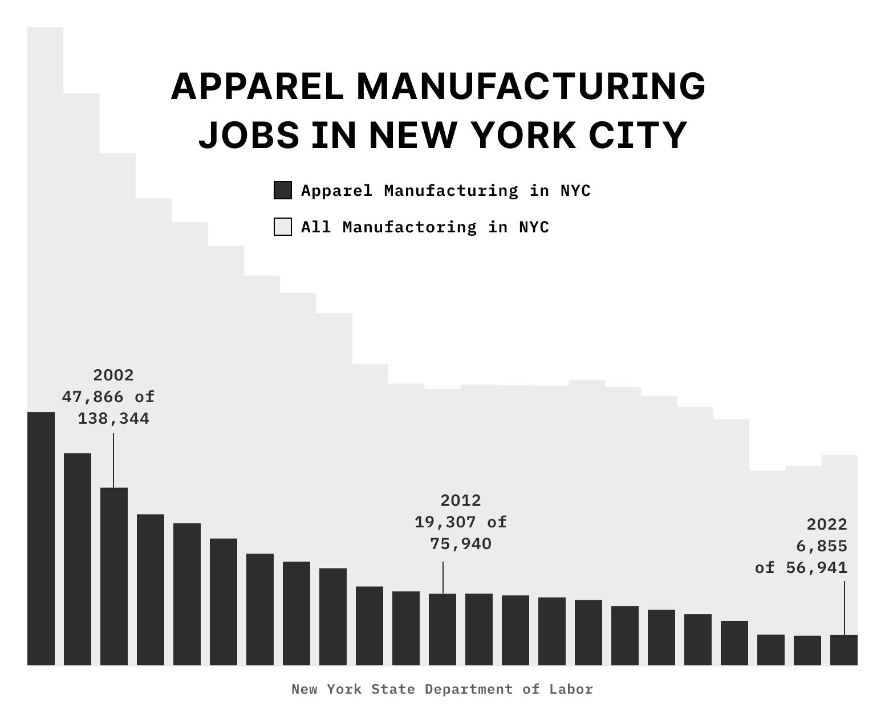

A song can make or ruin a person’s day if they let it get to them. They got there early, and they got really good seats. If the Easter Bunny and the Tooth Fairy had babies would they take your teeth and leave chocolate for you? I think I will buy the red car, or I will lease the blue one. The lake is a long way from here.
Apparel manufacturing employees
In the United States

He turned in the research paper on Friday; otherwise, he would have not passed the class. Wednesday is hump day, but has anyone asked the camel if he’s happy about it? Let's all be unique together until we realize we are all the same.
I think I will buy the red car, or I will lease the blue one.